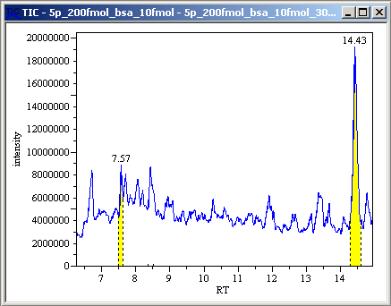
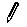
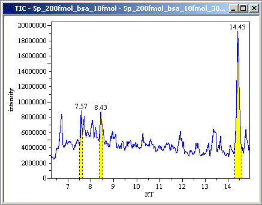
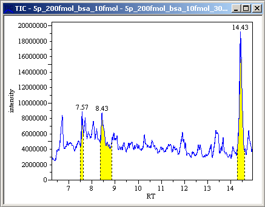
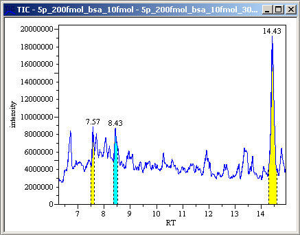

While peaks are displayed in a spectrum/chromatogram, select [Processing] in the menu bar and then select [Peaks] > [Edit Peaks] from the drop down menu.
The peak areas turn yellow.
You can also turn the peak areas yellow by clicking the
 icon in the toolbar.
icon in the toolbar.
When the mouse pointer appears as  , left-click at one end of the range where you want to add a peak and drag.
Release the left mouse button at the other end.
The peak is added.

While peaks are displayed in a spectrum/chromatogram, select [Processing] in the menu bar and then select [Peaks] > [Edit Peaks] from the drop down menu.
The peak areas turn yellow.
You can also turn the peak areas yellow by clicking the
icon in the toolbar.
When the mouse pointer appears as , left-click on the dot displayed at the end of the range you want to change and drag.
Release the left mouse button.
The peak area is changed.

While peaks are displayed in a spectrum/chromatogram, select [Processing] in the menu bar and then select [Peaks] > [Edit Peaks] from the drop down menu.
The peak areas turn yellow.
You can also turn the peak areas yellow by clicking the
icon in the toolbar.
Place the mouse pointer on the peak you want to delete.
The selected peak turns blue.
Left-click when the mouse pointer appears as .
The peak is deleted.